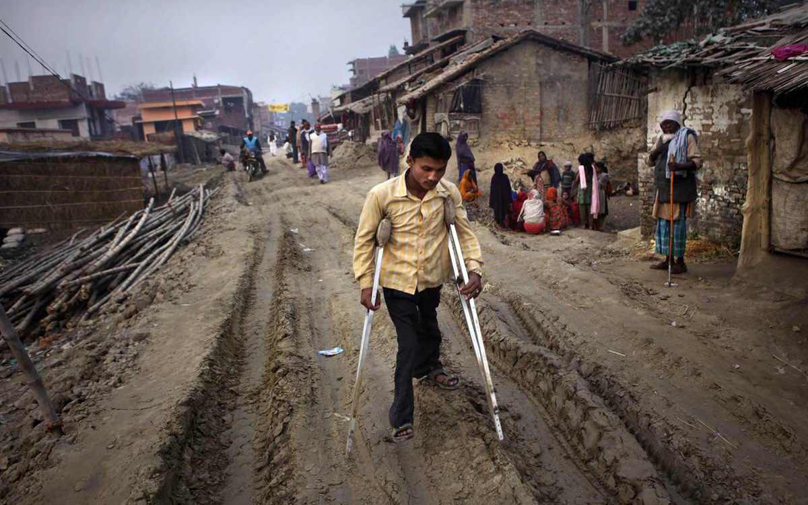

is an oil spill in the Gulf of Mexico which flowed unabated for three months in 2010, and may be continuing to seep.") Childhood Obesity:
Childhood Obesity:Childhood obesity has tripled in the past 30 years has both immediate and long-term effects on health and well-being. Childhood obesity is particularly troubling because the extra pounds often start children on the path to health problems that were once confined to adults."/> Polio:
Poliomyelitis, often called polio or infantile paralysis, is an acute, viral, infectious disease spread from person to person, primarily via the fecal-oral route. The term derives from the Greek poliós, meaning 'grey', myelós, referring to the 'spinal cord', and the suffix -itis, which denotes..."/> Greece Debt Crisis:
Beginning in late 2009, fears of a sovereign debt crisis developed among investors concerning Greece's ability to meet its debt obligations due to strong increase in government debt levels.This led to a crisis of confidence, indicated by a widening of bond yield..."/>